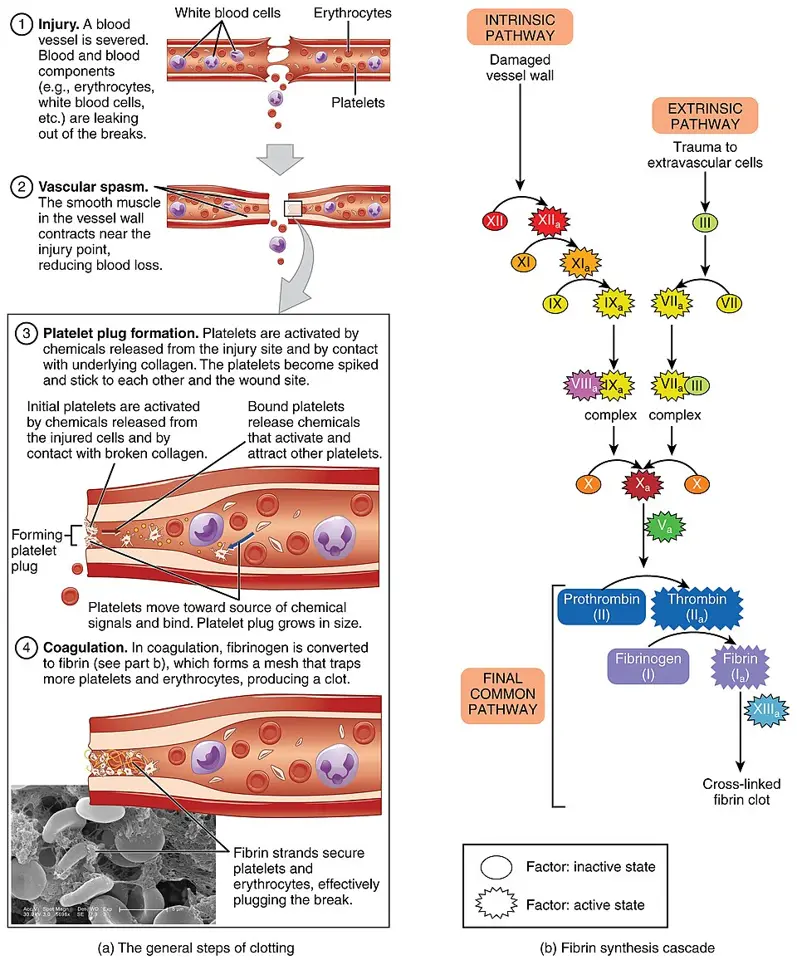

DX.7 — Maladie de von Willebrand
La maladie de von Willebrand est le trouble hémorragique héréditaire le plus fréquent, et elle saigne d’abord par les muqueuses, dont le nezS3S4. Un bilan standard normal ne l’exclut pas ; seuls les dosages du facteur de von Willebrand et du facteur VIII la confirmentS3. Le type décide du traitement, car la desmopressine aide certains types et en aggrave ou en manque d’autresS12.
1. Définition
Le Centre de référence français de la maladie de Willebrand définit en février 2021 une maladie hémorragique héréditaire, liée à un déficit quantitatif ou qualitatif du facteur de von WillebrandS3. Ce facteur assure l’adhésion des plaquettes au vaisseau lésé et transporte puis protège le facteur VIII de la coagulationS3.
2. Épidémiologie (Suisse, puis Europe)
Aucune série suisse publiée ne chiffre la prévalence ; les Hôpitaux universitaires de Genève (HUG) rappellent que la maladie touche autant d’hommes que de femmesS1. En Vénétie, un dépistage de 1218 écoliers de 11 à 14 ans a trouvé 0,82 % de malades, tous de type 1S6. Les lignes directrices de 2021 situent la prévalence entre 1 sur 100 et 1 sur 10 000 selon la définition retenueS4. Les chiffres utiles et le retard diagnostique expliquent pourquoi l’épistaxis récidivante doit faire penser à cette maladie.
Chiffres utiles : Suisse, puis Europe
Le tableau réunit les chiffres européens lus ; la Suisse ne publie pas de registre de prévalence consultableS1S6S7.
| Donnée | Valeur | Source |
|---|---|---|
| Écoliers de Vénétie (Italie), 11 à 14 ans | 10 malades sur 1218, soit 0,82 % (fourchette 0,57 à 1,15 %), tous de type 1 | S6 |
| Population générale (estimations internationales) | Entre 1 sur 100 et 1 sur 10 000 | S4 |
| Soins primaires | Environ 1 personne sur 1000 saigne assez pour consulter | S4 |
| Pays-Bas, étude WiN, 664 adultes avec facteur ≤ 30 U/dL | Règles abondantes 85 %, saignements cutanés 77 %, petites plaies 77 %, cavité buccale 62 % | S7 |
| Score hémorragique médian (WiN) | Type 1 : 9 ; type 2 : 13 ; type 3 : 19,5 ; femmes 12, hommes 10 | S7 |
| Thrombose artérielle (WiN, 635 adultes) | 3,3 % ; risque coronarien inférieur à la population néerlandaise (rapport standardisé 0,60) | S8 |
Les femmes consultent davantage, car les règles, la grossesse et l’accouchement révèlent le troubleS4. Le score hémorragique des femmes de l’étude WiN augmente de 0,8 point par décennie d’âgeS7.
Retard diagnostique et histoire naturelle
Les patients attendent souvent 15 ans ou plus entre le premier saignement et le diagnosticS4. Ce délai tient à la confusion entre saignement normal et anormal, et à la méconnaissance des typesS4.
La maladie peut être découverte par hasard, lors d’un bilan préopératoire, ou après des saignements chroniques répétésS3. Les taux du facteur augmentent avec l’âge ; les lignes directrices conseillent alors de reconsidérer le diagnostic plutôt que de l’effacerS4.
Le fardeau de santé publique vient des gestes : extraction dentaire, amygdalectomie et chirurgie saignent si l’équipe ignore le diagnosticS1S3.
3. Physiopathologie
Le diagnostic ne se comprend qu’avec la base à connaître : l’hémostase primaire colle les plaquettes à la brèche, puis la coagulation consolide le clouS3. Le facteur de von Willebrand sert de pont entre plaquettes et paroi lésée ; son déficit fait donc saigner les muqueuses dès les petites lésionsS3. Il protège aussi le facteur VIII ; un déficit profond abaisse ce facteur et ajoute des saignements profondsS3. La chaîne en quatre temps et la corrélation avec les examens et les traitements relient chaque anomalie à sa décision.
Base à connaître : hémostase primaire et tests globaux
L’hémostase primaire constitue le clou plaquettaire ; le facteur de von Willebrand y fixe les plaquettes au vaisseau léséS3. La coagulation, explorée par le temps de prothrombine (TP) et le temps de céphaline activée (TCA), constitue ensuite la fibrineS3.
Le schéma situe le défaut au temps de l’adhésion, que le temps de prothrombine et le TCA n’explorent pas ; un TP et un TCA normaux n’excluent donc pas la maladieS3.
Où manque le facteur de von Willebrand. Ce schéma didactique montre un vaisseau rompu en coupe longitudinale (a) et la cascade de la fibrine (b), avec des légendes en anglaisS18.

Lisez d'abord seul ce cliché (où manque le facteur de von willebrand) : cherchez vous-même le signe.
La copie annotée (où manque le facteur de von willebrand) porte des repères numérotés, qui sont décrits ci-dessous.
- Les premières plaquettes se fixent au collagène rompu ; le facteur de von Willebrand fait ce pont, et son déficit laisse la brèche ouverteS3.
- Le clou plaquettaire grossit ensuite par recrutement d’autres plaquettes.
- Le facteur VIII, que le facteur de von Willebrand protège, agit sur la voie que le TCA explore ; le TCA ne s’allonge donc que si le facteur VIII baisseS3.
- La fibrine consolide le clou ; elle ne remplace pas une adhésion absente.
- Le schéma ne dessine pas le facteur de von Willebrand, qui agit au premier repère.
Ce que l'image décide. Devant une histoire hémorragique, le médecin demande d’emblée l’antigène et l’activité du facteur de von Willebrand avec le facteur VIIIS3.

Chaîne en quatre temps
Amorce. Une mutation du gène du facteur de von Willebrand réduit sa quantité ou altère sa fonctionS1. Le type 3 résulte de deux allèles atteints, ce qui explique son absence presque complète du facteurS3.
Développement. Le facteur manque à l’adhésion plaquettaire ; chaque microlésion muqueuse saigne donc plus longtemps qu’elle ne le devraitS3. Dans le type 2B, le gain d’affinité pour les plaquettes change la conduite, car la desmopressine y devient contre-indiquéeS4S12.
Installation. Les saignements répétés, surtout menstruels, vident les réserves de fer ; le PNDS demande de dépister et de traiter cette carenceS3.
Maintien. Le facteur augmente lors d’un saignement, d’un traumatisme ou d’une grossesse, puisqu’il réagit comme une protéine de phase aiguëS4. Un dosage fait dans ces circonstances peut donc paraître normal et masquer la maladieS4.
Corrélation : perturbation, exploration, thérapeutique
| Perturbation | Exploration qui la montre | Thérapeutique qui la corrige (mécanisme) |
|---|---|---|
| Facteur bas (types 1 et 3) | Antigène et activité du facteurS3S4 | Desmopressine, qui libère le facteur des dépôts endothéliaux, ou concentré qui l’apporteS12S14 |
| Facteur dysfonctionnel (types 2A, 2B, 2M) | Rapport activité sur antigène inférieur à 0,7S4 | Concentré de facteur ; la desmopressine est contre-indiquée dans le type 2BS12 |
| Facteur VIII bas (types 2N et 3) | Activité coagulante du facteur VIII (FVIII:C)S3S4 | Concentré combiné, ou facteur VIII recombinant avec Veyvondi®S17 |
| Fibrinolyse locale de la muqueuse | La clinique la montre : l’épistaxis se prolonge ou récidiveS13 | Acide tranexamique, qui inhibe la fibrinolyseS13 |
| Carence martiale | Hémogramme et bilan du ferS3 | Substitution du fer et contrôle des règlesS3 |
4. Démarche diagnostique
Dans l’épistaxis, trois diagnostics graves passent avant celui-ci : l’épistaxis sous antithrombotique 🚩 E1, le purpura thrombopénique immunologique 🚩 E2 et le cancer naso-sinusien 🚩 E3. La maladie de von Willebrand ne porte pas de rang d’exclusion, mais elle rend dangereux tout geste invasif ignoréS3. Le tableau discriminant sépare les concurrents par un seul élément décisif.
Diagnostics discriminants
Le tableau range d’abord ce qui menace, puis ce qui est fréquent ; la numération plaquettaire se demande toujours, car elle tranche entre plusieurs lignesS3.
| Diagnostic | Élément qui tranche | Piège | Conduite si positif |
|---|---|---|---|
| Épistaxis sous antithrombotique (DX.2) | Prise d’un anticoagulant ou d’un antiagrégant | Le médicament peut révéler une maladie de von Willebrand méconnue | Voir DX.2 ; chercher l’histoire hémorragique antérieure au traitementS3 |
| Purpura thrombopénique immunologique (DX.6) | Numération plaquettaire basseS3 | Un purpura pétéchial oriente vers la thrombopénie, non vers le facteur | Voir DX.6 |
| Maladie de Rendu-Osler (DX.8) | Télangiectasies cutanéo-muqueuses et histoire familiale | Les deux maladies peuvent coexister | Voir DX.8 |
| Hémophilie A | Facteur VIII bas avec facteur de von Willebrand normal | Le type 2N lui ressembleS4 | Test de liaison au facteur VIII ou génétiqueS4 |
| Syndrome de von Willebrand acquis | Hémopathie associée, par exemple une macroglobulinémie de WaldenströmS11 | Le terme « acquis » exclut une transmission familiale ; le bilan familial n’aide donc pas | Rechercher et traiter la maladie causaleS11 |
Un saignement grave se traite sans attendre le typage, que le centre d’hémostase complète ensuiteS1S3.
Raisonnement pas à pas. La maladie est souvent manquée ; il faut l’aborder en quatre étapes : mécanisme, signe, examen, décisionS4.
Raisonnement pas à pas et erreur classique
Mécanisme. Un défaut d’adhésion plaquettaire fait saigner les muqueuses et les plaies, sans hématome profond sauf dans les formes sévèresS3.
Signe. L’histoire compte plus que l’examen : épistaxis répétées, règles abondantes et saignements après des gestes apparaissent dès l’enfanceS1S3.
Examen. En soins primaires, un outil d’évaluation hémorragique validé décide qui doit recevoir les dosages spécifiquesS4. L’antigène, l’activité du facteur et le FVIII:C se demandent ensemble, avec la numération plaquettaireS3.
Décision. Toute anomalie conduit au centre d’hémostase, qui confirme et type la maladie avant de choisir un traitementS3.
Erreur classique. Une femme de 24 ans a des épistaxis et des règles abondantes ; son TP et son TCA sont normaux, et le débutant la rassureS3. Or un score ISTH-BAT de 8 dépasse le seuil féminin de 6 et impose les dosages spécifiquesS9S4. Si l’antigène vaut alors 38 UI/dL, la maladie de type 1 est confirmée, puisque le seuil retenu est 50 UI/dL avec un saignement anormalS4.
Second piège. Le même dosage, fait en fin de grossesse ou après une hémorragie, peut revenir normal ; il faut le refaire à l’état de baseS4.
5. Anamnèse ciblée et drapeaux rouges
L’anamnèse fait le diagnostic d’orientation, car l’examen reste souvent normal entre deux saignementsS2S3. Elle caractérise chaque symptôme : épistaxis, règles abondantes, saignements après un geste, ecchymoses et petites plaies et saignements profonds. Elle recherche ensuite la famille, les médicaments et le score, puis les drapeaux rouges.
Épistaxis : le symptôme qui amène au cabinet d’ORL
Siège et type. Le saignement vient des fosses nasales ; il s’inscrit dans un syndrome cutanéo-muqueux et non dans un saignement profondS3.
Horaire et déclencheurs. Il survient spontanément ou après une petite lésion, et il récidive ; la notice de Cyklokapron® vise d’ailleurs les épistaxis prolongées ou récidivantesS3S13.
Signes associés. Le médecin cherche les gingivorragies, les ecchymoses et les règles abondantes, qui composent le même syndromeS3.
Typique ou non. L’épistaxis récidivante depuis l’enfance, associée à d’autres saignements muqueux, est typique, car elle traduit un défaut d’hémostase primaireS1S3. Une épistaxis unilatérale avec obstruction nasale ne l’est pas ; elle impose de chercher une lésion locale, comme une tumeur (DX.10).
Règles abondantes
Les règles abondantes sont le symptôme le plus fréquent : 85 % des adultes de l’étude WiN les rapportaientS7. Le médecin précise leur durée, le besoin de protections doubles et la carence en fer qui en résulteS3.
Ce symptôme est typique de la maladie ; le PNDS demande donc une collaboration étroite entre gynécologue et centre d’hémostaseS3. Une femme banalise souvent ce saignement ; le recours à un outil d’évaluation standardisé corrige ce biaisS4.
Saignements après un geste
Le médecin demande ce qui s’est passé après une extraction dentaire, une amygdalectomie, une chirurgie ou un accouchementS1S3. Une reprise opératoire, une transfusion ou un traitement hémostatique antérieur signent un saignement anormalS3.
Ce symptôme est très évocateur, car le geste agresse les muqueuses et révèle le défaut d’adhésion plaquettaireS1S3.
Ecchymoses et saignements de petites plaies
Les saignements cutanés et ceux des petites plaies touchaient chacun 77 % des adultes de l’étude WiNS7. Le médecin précise leur taille, leur siège et leur caractère spontané ou provoquéS3.
Des ecchymoses sur des zones peu exposées sont typiques, car elles naissent de traumatismes minimesS3. Des pétéchies orientent en revanche vers une thrombopénie, comme dans le purpura thrombopénique immunologique (DX.6)S3.
Saignements profonds
Les hématomes, les hémarthroses et les hémorragies intracrâniennes sont rares dans la maladie, sauf dans le type 3S3. Dans ce type, le risque se rapproche de celui de l’hémophilie sévère, car le facteur VIII est aussi très basS3.
Ce symptôme est donc atypique pour une forme modérée ; il oriente vers le type 3, une hémophilie ou un type 2NS3S4. Une céphalée brutale chez un patient de type 3 relève d’une urgence vitaleS3.
Famille, médicaments et score hémorragique
Famille. Un parent du premier degré atteint porte la probabilité de la maladie à environ 50 % ; les dosages se font alors sans attendre le scoreS4.
Médicaments. L’aspirine est contre-indiquée sauf situation très particulière, et les anti-inflammatoires non stéroïdiens doivent rester limités, car ils aggravent le saignementS3.
Carte. Le patient connu présente une carte de soins et d’urgence qui précise son type et ses traitements efficacesS3.
Score. L’ISTH-BAT est anormal à partir de 4 chez l’homme adulte, de 6 chez la femme adulte et de 3 chez l’enfantS9. Les études de 2021 attribuent aux scores validés une sensibilité groupée de 0,75 et une spécificité de 0,54S4.
Drapeaux rouges
Chaque drapeau impose une action immédiate ; le centre d’hémostase est joint dès que le type ou le traitement efficace sont inconnusS1S3.
| Drapeau rouge | Signification | Action immédiate |
|---|---|---|
| Épistaxis qui ne cède pas à la compression, malaise, pâleur | Perte sanguine grave | Conduite d’urgence de l’épistaxis (Phase A) et traitement hémostatique spécifiqueS1 |
| Céphalée brutale, déficit, troubles de conscience chez un type 3 | Hémorragie intracrânienne possibleS3 | Évaluation urgente, imagerie cérébrale et appel immédiat du centreS3 |
| Geste invasif prévu sans plan hémostatique | Saignement opératoire évitableS3 | Différer le geste programmé et appeler le centreS3 |
| Grossesse, accouchement ou post-partum | Hémorragie possible 10 à 12 jours après l’accouchementS14 | Plan obstétrical et hématologique écritS3 |
| Céphalée, nausées, prise de poids sous desmopressine | Hyponatrémie par rétention d’eauS12 | Natrémie urgente ; arrêt si elle descend sous 130 mmol/LS12 |
6. Examen physique ciblé, région par région
L’examen évalue d’abord la tolérance, puis la source nasale, puis les autres sites de saignement ; il ne type jamais la maladie à lui seulS3. Les temps suivent l’ordre du geste : état général, fosses nasales, cavité buccale, peau, articulations et muscles et examen neurologique.
Temps 1 — état général et hémodynamique
Signe. Le médecin cherche une pâleur, une tachycardie et une hypotension, qui mesurent la perte sanguine réelle.
Geste. Il prend le pouls et la pression artérielle couché puis assis, et il regarde la paume et les conjonctives.
Aspect et piège. Le sang avalé échappe à l’estimation, ce qui fait sous-estimer la perte. La pression artérielle se surveille aussi sous desmopressine, qui peut l’abaisser à forte doseS12.
Temps 2 — fosses nasales
Signe. Le médecin cherche le point de saignement ; une maladie hémorragique connue ne dispense jamais de chercher une lésion locale.
Geste. Après mouchage doux et éclairage frontal, il écarte la narine au spéculum et inspecte la cloison antérieure, puis il complète si besoin par l’endoscopie.
Aspect et piège. Un suintement diffus de la muqueuse évoque un trouble de l’hémostase plutôt qu’un vaisseau unique. Des télangiectasies multiples orientent vers la maladie de Rendu-Osler (DX.8). La technique détaillée figure dans le cours sur l’épistaxis.
Temps 3 — cavité buccale
Signe. Le médecin cherche une gingivorragie et un écoulement de sang dans le pharynx postérieurS3.
Geste. Il inspecte les gencives et le pharynx à l’abaisse-langue, sous bonne lumière.
Aspect et piège. Du sang au fond de la gorge peut venir du nez et faire croire à une hémorragie buccale. Les saignements buccaux touchaient 62 % des adultes de l’étude WiNS7.
Temps 4 — peau
Signe. Le médecin cherche des ecchymoses, des plaies qui suintent et des pétéchiesS3.
Geste. Il examine tout le tégument dévêtu, y compris le tronc et la face interne des bras.
Aspect et piège. Les ecchymoses s’accordent avec la maladie ; les pétéchies doivent faire compter les plaquettes, car elles traduisent plutôt une thrombopénieS3.
Temps 5 — articulations et muscles
Signe. Le médecin cherche une hémarthrose ou un hématome musculaire, attendus surtout dans le type 3S3.
Geste. Il palpe les grosses articulations, cherche un épanchement et compare l’amplitude des deux côtés.
Aspect et piège. Une articulation chaude, gonflée et douloureuse chez un patient de type 3 se traite comme un saignement, et non comme une arthriteS3.
Temps 6 — examen neurologique
Signe. Le médecin cherche un trouble de conscience, un déficit focal ou un syndrome méningéS3.
Geste. Il cote la conscience, teste la motricité des quatre membres et recherche une raideur de nuque.
Aspect et piège. Le type 3 peut saigner dans le crâne comme une hémophilie sévère ; un examen d’abord normal ne rassure pas après un traumatisme crânienS3.
7. Approche syndromique
La maladie se présente par trois syndromes, dont le premier domine : 7.1 hémorragique cutanéo-muqueux, 7.2 hémorragique profond et 7.3 anémique ferripriveS3. Chaque syndrome se décompose en signes fonctionnels et physiques, que le tableau relie à leur mécanisme.
7.1 Syndrome hémorragique cutanéo-muqueux
Définition. Ce syndrome réunit des saignements de la peau et des muqueuses nés de lésions minimes, par défaut d’hémostase primaireS3.
Signes fonctionnels. Le patient rapporte des épistaxis, des gingivorragies, des règles abondantes et des saignements prolongés des petites plaiesS3.
Signes physiques. Le médecin trouve des ecchymoses et parfois un suintement muqueux actif ; il cherche ces signes par l’inspection décrite au point 6.
Mécanisme. Sans pont de facteur de von Willebrand, les plaquettes adhèrent mal au sous-endothélium ; le clou se forme lentementS3.
7.2 Syndrome hémorragique profond
Définition. Ce syndrome réunit des hématomes, des hémarthroses et des hémorragies intracrâniennes, propres à un déficit en facteur VIIIS3.
Signes fonctionnels. Le patient décrit une douleur articulaire ou musculaire avec gonflement, ou une céphalée après traumatismeS3.
Signes physiques. Le médecin trouve un épanchement articulaire, une masse musculaire tendue ou un déficit neurologiqueS3.
Mécanisme. Le facteur VIII, privé de son transporteur, est très bas dans le type 3 ; la coagulation devient alors aussi déficienteS3.
7.3 Syndrome anémique ferriprive
Définition. Ce syndrome traduit l’épuisement des réserves en fer par des pertes répétées, surtout menstruelles et nasalesS3.
Signes fonctionnels. Le patient se plaint de fatigue et d’essoufflement à l’effort.
Signes physiques. L’examen montre une pâleur cutanéo-muqueuse et parfois une tachycardie.
Mécanisme. Chaque saignement retire du fer ; le PNDS confie au médecin traitant le dépistage et le traitement de cette carenceS3.
Tableau des syndromes
| Syndrome | Signes fonctionnels | Signes physiques |
|---|---|---|
| 7.1 Cutanéo-muqueux | Épistaxis, gingivorragies, règles abondantes, petites plaiesS3 | Ecchymoses, suintement muqueuxS3 |
| 7.2 Profond | Douleur articulaire ou musculaire, céphaléeS3 | Hémarthrose, hématome, déficit neurologiqueS3 |
| 7.3 Anémique ferriprive | Fatigue, dyspnée d’effort | Pâleur, tachycardie |
8. Diagnostic positif et critères
Le diagnostic repose sur un faisceau : une histoire hémorragique personnelle ou familiale et des anomalies biologiques évocatricesS3. Les lignes directrices ASH, ISTH, NHF et WFH de 2021 fixent des seuils chiffrés ; elles précisent aussi ce qui suffit et ce qui ne suffit pasS4. La classification de l’ISTH (International Society on Thrombosis and Haemostasis), reprise en 2021, distingue trois types qui décident du traitementS4.
Les types de la maladie
Le tableau suit la classification de l’ISTH ; chaque ligne relie l’anomalie du facteur à sa conséquence pratiqueS4.
| Type | Anomalie du facteur | Conséquence pratique |
|---|---|---|
| Type 1 | Déficit quantitatif partielS4 | La desmopressine peut suffire si l’épreuve la montre efficaceS12 |
| Type 1C | Clairance accélérée du facteur, soit 15 à 20 % des types 1S4 | L’épreuve à la desmopressine, prélevée à 1 et 4 heures, montre la chute rapideS4 |
| Type 2A | Perte des multimères de haut poids moléculaireS4 | Le rapport activité sur antigène baisseS4 |
| Type 2B | Gain de fonction : affinité accrue pour les plaquettesS4 | L’AIPS contre-indique Octostim®S12 |
| Type 2M | Liaison réduite aux plaquettes ou au collagèneS4 | Le rapport activité sur antigène baisseS4 |
| Type 2N | Liaison réduite au facteur VIIIS4 | Le facteur VIII baisse et mime une hémophilie AS4 |
| Type 3 | Absence quasi totale du facteur, facteur VIII très basS4 | La desmopressine est inefficace ; un concentré s’imposeS12S10 |
Le type 3 se transmet sur le mode autosomique récessif, alors que la transmission habituelle reste autosomique dominanteS3.
Critères de 2021
Le tableau résume les recommandations 1, 6 et 8 de 2021 et le seuil du score de 2014S4S9.
| Critère | Seuil | Usage |
|---|---|---|
| Type 1, sans tenir compte du saignement | Facteur (antigène ou activité) inférieur à 30 UI/dLS4 | Confirme le type 1 |
| Type 1, avec saignement anormal | Facteur inférieur à 50 UI/dLS4 | Confirme le type 1 ; la limite locale s’applique si elle est plus basseS4 |
| Type 2 (2A, 2B, 2M) | Rapport activité plaquettaire sur antigène inférieur à 0,7S4 | Oriente vers le type 2 et les tests de deuxième intention |
| ISTH-BAT anormal | ≥ 4 homme adulte, ≥ 6 femme adulte, ≥ 3 enfantS9 | Sélectionne en soins primaires qui reçoit les dosagesS4 |
Les lignes directrices ne demandent pas de normes propres au groupe sanguin ABOS4. Une mutation se trouve dans 75 à 82 % des cas sous 30 UI/dL, mais dans 44 à 60 % entre 30 et 50 UI/dLS4.
Ce qui suffit et ce qui ne suffit pas
Suffit. Un facteur bas, mesuré à l’état de base et confirmé, associé à une histoire hémorragique anormale, établit le type 1S4.
Ne suffit pas. Un TP et un TCA normaux n’excluent pas la maladieS3. Un score hémorragique normal ne permet pas non plus d’écarter la maladie chez un apparenté du premier degréS4.
Ne suffit pas non plus. Un dosage normal pendant une grossesse, un saignement ou un traumatisme ne rassure pas, car le facteur s’y élèveS4.
Normalisation avec l’âge. Chez un type 1 confirmé dont les taux se normalisent, les lignes directrices conseillent de reconsidérer et non d’effacer le diagnosticS4.
9. Examens complémentaires
9.a — Référence. Aucun test unique ne fait foi ; le centre d’hémostase confirme et type la maladie par un ensemble de dosages spécialisésS3.
9.b — Première intention. Le médecin traitant prescrit l’antigène du facteur, son activité plaquettaire, le facteur VIII et l’hémogrammeS3. Les TP et TCA se lisent avec prudenceS3.
9.c — Situations particulières. La grossesse, l’enfant et l’insuffisance rénale modifient le choix ou la lecture des tests ; la fenêtre des alternatives les détailleS4S12.
9.d — Deuxième intention. Le centre ajoute le rapport activité sur antigène, les multimères, la génétique ciblée et l’épreuve à la desmopressineS4. Le tableau d’interprétation résume la conduite.
Antigène du facteur de von Willebrand (VWF:Ag)
Indication. Le médecin le prescrit devant une histoire hémorragique anormale ou un score positifS3S4.
Valeurs. Les seuils diagnostiques figurent au point 8 (critères de 2021)S4.
Pièges. Le prélèvement doit se faire à l’état de base, loin d’un saignement, d’un traumatisme ou d’une grossesseS4. Un antigène normal n’exclut pas un type 2, car la protéine peut être présente mais inactiveS4.
Activité plaquettaire du facteur (VWF:GPIbM, VWF:RCo)
Indication. L’activité mesure la capacité du facteur à lier la glycoprotéine Ib des plaquettes ; elle complète toujours l’antigèneS3S4.
Choix du test. Les lignes directrices préfèrent les tests récents, comme VWF:GPIbM, à l’ancien cofacteur de la ristocétine (VWF:RCo)S4.
Pièges. Ce test exige un laboratoire expérimenté ; un résultat isolé et limite se répète plutôt que de conclureS4. Les AIPS des concentrés expriment encore leurs doses en unités VWF:RCoS14.
Activité coagulante du facteur VIII (FVIII:C)
Indication. Le facteur VIII se dose toujours avec le facteur de von Willebrand, puisque celui-ci le transporte et le protègeS3.
Interprétation. Un facteur VIII très bas avec un facteur de von Willebrand indétectable signe le type 3S3. Un facteur VIII isolément bas oriente vers une hémophilie A ou un type 2NS4.
Usage thérapeutique. L’hémostase exige un FVIII:C supérieur à 0,4 UI/mL, soit 40 %S14S17.
Hémogramme et bilan du fer
Indication. La numération plaquettaire se demande systématiquement ; elle écarte une thrombopénie comme le purpura thrombopénique immunologiqueS3.
Interprétation. L’hémoglobine et le bilan du fer mesurent le retentissement des pertes répétéesS3.
Piège. La desmopressine n’aide pas en cas de thrombopénie : l’AIPS précise qu’Octostim® ne corrige pas le temps de saignement prolongé d’une thrombocytopénieS12.
TP et TCA
Ce qu’ils disent. Ces tests explorent la coagulation, non l’adhésion plaquettaire ; ils peuvent donc rester normaux dans la maladieS3.
Ce qu’ils ne disent pas. Un TP et un TCA normaux n’excluent pas le diagnostic, et les dosages spécifiques restent nécessairesS3.
Piège. Un TCA allongé chez un homme fait souvent penser à l’hémophilie ; il justifie pourtant aussi les dosages du facteur de von WillebrandS4.
Alternatives selon la situation
Grossesse. Le facteur s’élève pendant la grossesse ; un dosage normal à ce moment ne rassure pas, et le plan d’accouchement s’établit avec le centreS4S3.
Enfant. Chez l’enfant, garçon ou fille, le score ISTH-BAT devient anormal dès 3 pointsS9.
Insuffisance rénale. L’épreuve à la desmopressine est contre-indiquée si la clairance de la créatinine est inférieure à 50 mL/minS12.
Hyponatrémie ou cardiopathie. L’hyponatrémie, l’angor instable et l’insuffisance cardiaque contre-indiquent aussi l’épreuve ; le centre type alors la maladie sans elleS12.
Rapport activité sur antigène
Indication. Le rapport se calcule devant tout dépistage initial anormalS4.
Valeurs. Un rapport inférieur à 0,7 confirme un type 2A, 2B ou 2M ; les lignes directrices ont abandonné l’ancien seuil de 0,5S4.
Piège. Certains types 2 ont un antigène et une activité normaux ; seul le rapport abaissé les révèleS4.
Multimères et liaison au collagène
Indication. L’analyse des multimères ou le rapport de liaison au collagène sur antigène (VWF:CB/VWF:Ag) précisent un type 2A, 2B ou 2M suspectéS4.
Interprétation. La perte des grands multimères oriente vers les types 2A et 2B, puisque ces formes portent l’essentiel de l’activitéS4.
Piège. Ces tests demandent un laboratoire spécialisé ; leur résultat se discute toujours avec le centreS3.
Génétique ciblée et liaison au facteur VIII
Type 2B. Les lignes directrices préfèrent la génétique ciblée à l’agrégation plaquettaire induite par une faible dose de ristocétineS4.
Type 2N. Le test de liaison du facteur au facteur VIII ou la génétique ciblée le distinguent d’une hémophilie AS4.
Piège. Aux Pays-Bas, la génétique ne fait pas partie du bilan courant ; elle répond à une question préciseS10.
Épreuve à la desmopressine
Indication. L’épreuve vérifie qu’un patient répond avant qu’on ne compte sur la desmopressine ; l’AIPS demande de tester l’effet dans chaque cas, sauf en hémorragie aiguëS12.
Prescription. Octostim® se donne à 0,3 µg/kg, dilué dans 10 mL de NaCl isotonique, en 10 à 20 minutes par voie intraveineuseS12.
Lecture. Des prélèvements à 1 et 4 heures confirment une clairance accélérée (type 1C), ce que les lignes directrices préfèrent au rapport du propeptideS4.
Pièges. L’AIPS impose de surveiller natrémie, osmolalité, poids et pression artérielle pendant l’épreuveS12. Les Pays-Bas réservent la desmopressine aux patients répondeurs à cette perfusion testS10.
Interprétation : résultat, signification, conduite
| Résultat | Signification | Conduite |
|---|---|---|
| Facteur < 30 UI/dLS4 | Type 1 ou 3 selon le facteur VIIIS3S4 | Centre d’hémostase, carte de soinsS3 |
| Facteur 30 à 50 UI/dL et saignement anormalS4 | Type 1S4 | Épreuve à la desmopressineS5 |
| Rapport activité/antigène < 0,7S4 | Type 2A, 2B ou 2MS4 | Multimères ou génétique avant toute desmopressineS4S12 |
| FVIII:C bas isoléS4 | Type 2N ou hémophilie AS4 | Liaison au facteur VIII ou génétiqueS4 |
| Tout normal pendant une grossesse ou un saignementS4 | Résultat non interprétableS4 | Refaire à l’état de baseS4 |
10. Arbre décisionnel
L’arbre part de l’épistaxis qui saigne encore, puis il mène au diagnostic et au traitement ; chaque nœud renvoie à un signe, un examen ou une actionS3.
- Si l’épistaxis menace la circulation, alors la conduite d’urgence de la Phase A s’applique d’abord, carte de soins en mainS3.
- Si le type est connu, alors le traitement inscrit sur la carte se donne sans attendre ; le centre est joint en parallèleS3.
- Si le type est inconnu et le saignement grave, alors le concentré se discute avec le centre avant tout typageS1S3.
- Si la numération plaquettaire est basse, alors le médecin s’oriente vers le purpura thrombopénique immunologique (DX.6)S3.
- Si un antithrombotique est en cours, alors la conduite de DX.2 s’applique ; l’histoire antérieure au traitement reste à recueillir.
- Si l’histoire ou le score est anormal, alors l’antigène, l’activité et le FVIII:C se demandentS4S9.
- Si le facteur est inférieur à 50 UI/dL avec saignement anormal, alors le type 1 est retenu et l’épreuve à la desmopressine suitS4S5.
- Si le rapport activité sur antigène est inférieur à 0,7, alors le centre recherche un type 2 avant toute desmopressineS4S12.
- Si tout est normal mais l’histoire forte, alors le dosage se refait à l’état de baseS4.
- Si l’épistaxis est unilatérale avec obstruction, alors une tumeur se recherche, quel que soit le bilan d’hémostase (DX.9, DX.10).
11. Prise en charge selon les recommandations suisses
Les HUG fondent le traitement sur trois moyens : la desmopressine dans les formes légères, l’acide tranexamique pour la bouche et le nez, et les concentrés de facteurS1. Les formes sévères et les chirurgies relèvent d’une unité spécialiséeS1. Le PNDS confie au médecin traitant le renouvellement des traitements, le dépistage de la carence en fer et la sécurité des gestes invasifsS3.
11.A But chiffré
Le traitement vise une activité du facteur supérieure à 0,6 UI/mL et un FVIII:C supérieur à 0,4 UI/mL pour obtenir l’hémostaseS14S16. Lors d’un saignement majeur sous Veyvondi®, l’AIPS demande de maintenir l’activité résiduelle au-dessus de 50 %S17.
11.B Moyens
La fenêtre « Urgence — conduite chronologique » fixe la séquence de l’épistaxis grave. L’ordre du traitement va du geste local au concentré, selon le typeS1S10. Le tableau des médicaments ouvre une fiche par molécule ; les situations spéciales et le volet social complètent la conduite.
Urgence — conduite chronologique
La séquence vaut pour une épistaxis grave chez un patient atteint ou suspect ; la compression et le tamponnement suivent la Phase AS3.
| Délai | Action | Ce qu’il faut prévoir |
|---|---|---|
| Minutes 0 à 10 | Compression, évaluation hémodynamique, voie veineuse, carte de soins lueS3 | Le sang avalé fait sous-estimer la perte |
| Minutes 10 à 30 | Appel du centre d’hémostase ; tamponnement si la compression échoue (Phase A)S1 | Un tamponnement retiré trop tôt fait resaigner |
| Première heure, type 1 répondeur connu, adulte | Octostim® 0,3 µg/kg en 10 à 20 minutes par voie intraveineuseS12 | Restreindre les boissons ; natrémie et pression artérielleS12 |
| Première heure, type 2B, type 3, non-répondeur ou contre-indication | Concentré de facteur selon l’AIPS, par exemple Haemate® P 40 à 80 UI/kg de VWF:RCoS14 | Vitesse maximale de 4 mL/minS14 |
| Première heure, adulte sous Veyvondi® | Épistaxis mineure : 40 à 50 UI/kg ; épistaxis sévère : 50 à 80 UI/kgS17 | Ajouter un facteur VIII recombinant si le FVIII:C est inconnu ou inférieur à 40 %S17 |
| Dès que possible, adulte | Cyklokapron® 2 comprimés de 500 mg 3 fois par jour pendant 7 joursS13 | Contre-indiqué en cas de thrombose ancienne ou de convulsionsS13 |
| Heures 12 à 24 | Deuxième dose de desmopressine si la première a agi, ou nouvelle dose de concentréS12S14 | Tachyphylaxie de la desmopressine après répétitionS12 |
| Jours 2 à 4 | Passer à un autre hémostatique si le saignement dureS12 | Excès de FVIII:C sous concentré après 24 à 48 heuresS14 |
Critères de transfert. Un saignement non contrôlé, un type 3 ou l’absence de plan connu imposent le transfert vers un centre disposant de concentrésS1S3.
Enfant. Chez le petit enfant de moins de 35 kg, l’AIPS prévoit l’auto-injection sous-cutanée de 0,3 µg/kg lors d’une blessure critiqueS12. Avant 5 ans, le risque d’hyponatrémie augmente et impose une restriction hydrique stricteS12.
Ordre du traitement
D’abord le geste local. La compression et les hémostatiques d’appoint arrêtent la plupart des saignements muqueux ; le PNDS les inscrit parmi les traitements du médecin traitantS3.
Ensuite l’antifibrinolytique. L’acide tranexamique stabilise le caillot sur la muqueuse nasale ou buccaleS1S13.
Puis la desmopressine. Elle convient au patient répondeur, surtout de type 1, après une épreuve documentéeS5S10S12.
Enfin le concentré. Il s’impose si la desmopressine est inefficace ou contre-indiquée, et dans les types 2B et 3S10S14.
Les lignes directrices de 2021 traitent aussi de la prophylaxie des saignements fréquents, des antithrombotiques et des cibles chirurgicalesS5.
Médicaments autorisés en Suisse
Chaque ligne renvoie à sa fiche, qui recopie l’AIPS de la spécialité ; les doses s’appliquent à l’adulte sauf mention contraire.
| Molécule ® | Dose AIPS | Voie, durée | Contre-indication majeure |
|---|---|---|---|
| Desmopressine — Octostim® | 0,3 µg/kgS12 | IV en 10 à 20 min ou SC ; 1 à 2 répétitionsS12 | Type 2B, hyponatrémie, clairance < 50 mL/minS12 |
| Acide tranexamique — Cyklokapron® | 1 g 3 fois par jour (épistaxis)S13 | Orale, 7 joursS13 | Thrombose, convulsions, insuffisance rénale sévèreS13 |
| Facteur VIII/facteur de von Willebrand — Haemate® P | 40 à 80 UI/kg de VWF:RCoS14 | IV, toutes les 12 à 24 hS14 | HypersensibilitéS14 |
| Facteur VIII/facteur de von Willebrand — Wilate® | 20 à 50 UI/kgS15 | IV, toutes les 12 à 24 hS15 | HypersensibilitéS15 |
| Facteur VIII/facteur de von Willebrand — Voncento® | 40 à 80 UI/kg de VWF:RCoS16 | IV, toutes les 12 à 24 hS16 | HypersensibilitéS16 |
| Vonicog alfa — Veyvondi® | 40 à 80 UI/kgS17 | IV, toutes les 8 à 24 hS17 | Allergie aux protéines de souris ou de hamsterS17 |
Desmopressine — Octostim® 15 µg/mL, solution injectable (n° 52711)S12
| Indication | « Activation pré-opératoire et posttraumatique du facteur VIII et du facteur von Willebrand » dans l’hémophilie A légère à moyenne ou la maladie de von Willebrand de type IS12 |
|---|---|
| Mécanisme | Élève de façon significative le VIII:C et l’antigène du facteur ; tachyphylaxie après épuisement des dépôts endothéliauxS12 |
| Dose AIPS | 0,3 µg/kg dilué dans 10 mL de NaCl isotonique, IV en 10 à 20 min ; ou dilué dans 50 à 100 mL en 15 à 30 min, 1 h 30 avant un geste dentaire ou chirurgical puis toutes les 12 heures, avec l’acide tranexamique ; ou 0,3 µg/kg SC en une fois, toujours avec l’acide tranexamique ; répétition possible 1 à 2 fois à 12 à 24 h d’intervalleS12 |
| Enfant | Expérience limitée ; voie IV préférée à la forme nasale ; petit enfant de moins de 35 kg : auto-injection SC de 0,3 µg/kg lors d’une blessure critiqueS12 |
| Contre-indications | Hypersensibilité ; polydipsie habituelle ou psychogène ; angor instable, insuffisance cardiaque ou maladie traitée par diurétique ; hyponatrémie ; clairance de la créatinine < 50 mL/min ; SIADH (sécrétion inappropriée d’hormone antidiurétique) ; type IIbS12 |
| Inefficacité | Activité résiduelle inférieure à 5 %, types IIB et IIIS12 |
| Grossesse | Aucun effet négatif observé chez 53 femmes avec diabète insipide et 216 avec complications hémorragiques ; prudence pendant la grossesseS12 |
| Allaitement | Passage très faible dans le lait ; Octostim® peut être utilisé pendant l’allaitementS12 |
| Surveillance | Restriction hydrique, poids, natrémie, osmolalité, pression artérielle ; arrêt si natrémie < 130 mmol/L ou osmolalité < 270 mOsm/kg ; risque accru avant 5 ans et après 65 ansS12 |
| Effets indésirables | Hyponatrémie avec convulsions, œdème cérébral ou coma ; à forte dose, baisse tensionnelle transitoire, flush et tachycardie réflexe ; réactions d’hypersensibilitéS12 |
| Interactions | Les médicaments qui modifient l’équilibre hydrosodé, comme les opioïdes, renforcent le risque d’hyponatrémieS12 |
Les HUG réservent la desmopressine aux formes relativement légères, où elle stimule la sécrétion du facteurS1. Un saignement actif de plus de 2 à 4 jours impose un autre hémostatique, à cause de la tachyphylaxieS12.
Acide tranexamique — Cyklokapron® comprimés pelliculés 500 mg (n° 33741)S13
| Indication | Hémorragies par fibrinolyse locale accrue, dont « d’épistaxis ainsi qu’après des extractions dentaires chez les patients manifestant une coagulopathie » et l’hyperménorrhéeS13 |
|---|---|
| Mécanisme | Antifibrinolytique : il corrige la fibrinolyse locale accrue qui dissout le caillotS13 |
| Dose AIPS, adulte | Épistaxis prolongée ou récidivante : 2 comprimés 3 fois par jour pendant 7 jours ; extraction dentaire avec coagulopathie : 25 mg/kg 3 à 4 fois par jour pendant 6 à 8 joursS13 |
| Dose AIPS, règles abondantes | 1er jour 2 comprimés 4 fois, 2e et 3e jours 2 comprimés 3 fois par jourS13 |
| Enfant | 25 mg/kg par doseS13 |
| Insuffisance rénale | Créatinine 120 à 250 µmol/L : 15 mg/kg toutes les 12 heures ; 250 à 500 µmol/L : 15 mg/kg toutes les 24 heuresS13 |
| Contre-indications | Hypersensibilité, hypercoagulabilité, coagulation intravasculaire disséminée, hémorragie sous-arachnoïdienne, insuffisance rénale sévère, thromboembolie aiguë, antécédent de thrombose, antécédent de convulsionsS13 |
| Grossesse | Aucune étude contrôlée chez la femme enceinte ; prudenceS13 |
| Allaitement | Passage d’environ 1 % de la concentration sérique ; effet improbable chez l’enfantS13 |
| Effets indésirables | Troubles digestifs dose-dépendants ; troubles visuels possiblesS13 |
Les HUG prescrivent l’acide tranexamique lors des saignements de la bouche ou du nez, car il rend le caillot plus solideS1.
Facteur VIII et facteur de von Willebrand plasmatiques — Haemate® P (n° 45780)S14
| Indication | Prévention et traitement des hémorragies, y compris opératoires, quand la desmopressine seule est inefficace ou contre-indiquéeS14 |
|---|---|
| Dose AIPS | Calcul en UI de VWF:RCo ; 1 UI/kg élève le VWF:RCo d’environ 0,02 UI/mL ; 40 à 80 UI/kg de VWF:RCo et 20 à 40 UI/kg de FVIII:C ; dose initiale de 80 UI/kg parfois nécessaire dans le type 3S14 |
| Chirurgie | Administration 1 à 2 heures avant l’opération, puis toutes les 12 à 24 heuresS14 |
| Enfant | Posologie adaptée au poids selon les règles de l’adulteS14 |
| Voie | IV ; vitesse maximale de 4 mL/minS14 |
| Contre-indication | Hypersensibilité au principe actif ou à un excipientS14 |
| Grossesse et allaitement | Seulement en cas d’indication explicite ; hémorragie possible 10 à 12 jours après l’opération ou l’accouchementS14 |
| Surveillance | Élévation excessive du FVIII:C en traitement continu : réduire la dose ou espacer après 24 à 48 heuresS14 |
Facteur VIII et facteur de von Willebrand plasmatiques — Wilate® 500 et 1000 UI (n° 56133)S15
| Indication | Prévention et traitement des hémorragies quand la desmopressine est inefficace ou contre-indiquéeS15 |
|---|---|
| Dose AIPS | Rapport FVIII sur VWF:RCo de 1:1 ; 1 UI/kg élève l’activité de 1,5 à 2 UI/dL ; 20 à 50 UI/kg habituellement ; 50 à 80 UI/kg en dose initiale dans le type 3S15 |
| Chirurgie | Début 1 à 2 heures avant ; cibles VWF:RCo ≥ 60 % et FVIII:C ≥ 40 % ; reprise toutes les 12 à 24 heuresS15 |
| Prophylaxie | 20 à 40 UI/kg deux à trois fois par semaineS15 |
| Enfant | Données insuffisantes avant 6 ansS15 |
| Contre-indication | Hypersensibilité à un principe actif ou à un excipientS15 |
| Grossesse et allaitement | Seulement en cas d’indication absolue ; l’accouchement augmente le risque hémorragiqueS15 |
| Surveillance | Un FVIII:C trop élevé en traitement prolongé peut accroître le risque thrombotiqueS15 |
Facteur VIII et facteur de von Willebrand plasmatiques — Voncento® (n° 65477)S16
| Indication | Épisodes hémorragiques ou saignements chirurgicaux quand la desmopressine seule est inefficace ou contre-indiquéeS16 |
|---|---|
| Dose AIPS | Rapport FVIII:C sur VWF:RCo de 1:2,4 ; 1 UI/kg élève le VWF:RCo de 0,02 UI/mL ; 40 à 80 UI/kg de VWF:RCo ; 80 UI/kg en dose initiale possible dans le type 3S16 |
| Chirurgie | Administration 1 à 2 heures avant, puis toutes les 12 à 24 heuresS16 |
| Prophylaxie | 25 à 40 UI/kg de VWF:RCo 1 à 3 fois par semaine ; davantage si saignements digestifs ou menstruelsS16 |
| Contre-indication | Hypersensibilité aux substances actives ou aux excipientsS16 |
| Grossesse et allaitement | Aucune expérience ; seulement en cas d’indication claire, en tenant compte du risque hémorragique accruS16 |
Facteur de von Willebrand recombinant, vonicog alfa — Veyvondi® (n° 66601)S17
| Indication | Adultes de 18 ans et plus, quand la desmopressine seule est inefficace ou contre-indiquée ; jamais pour l’hémophilie AS17 |
|---|---|
| Mécanisme | Facteur sans facteur VIII ; le FVIII:C endogène dépasse en général 40 % dans les 6 heures et se maintient jusqu’à 72 heuresS17 |
| Dose AIPS | Saignement mineur, épistaxis comprise : 40 à 50 UI/kg puis 40 à 50 UI/kg toutes les 8 à 24 heures ; majeur : 50 à 80 UI/kg puis 40 à 60 UI/kg toutes les 8 à 24 heures pendant 2 à 3 jours environS17 |
| Facteur VIII | Facteur VIII recombinant avec la première perfusion si le FVIII:C est inférieur à 40 % ou inconnu et que l’hémostase presseS17 |
| Contre-indications | Hypersensibilité ; allergie aux protéines de souris ou de hamsterS17 |
| Grossesse | Aucune expérience ; seulement si indication absolue, compte tenu du risque hémorragique de l’accouchementS17 |
| Allaitement | Passage inconnu dans le lait ; seulement si clairement indiquéS17 |
| Surveillance | Rechercher des inhibiteurs si le saignement n’est pas contrôlé malgré une dose appropriéeS17 |
Situations spéciales
Grossesse et accouchement. Le centre établit le plan d’accouchement, car les hémorragies du post-partum peuvent survenir 10 à 12 jours après la naissanceS3S14. Les lignes directrices de 2021 couvrent l’anesthésie péridurale et le post-partumS5.
Allaitement. La desmopressine reste utilisable pendant l’allaitement ; l’acide tranexamique ne passe dans le lait qu’à environ 1 % du taux maternelS12S13.
Enfant. L’enfant de moins de 5 ans retient l’eau plus facilement sous desmopressine ; l’acide tranexamique se dose à 25 mg/kg par priseS12S13. Le PNDS prévoit un projet d’accueil scolaire individualisé pour les formes sévèresS3.
Sujet âgé. Après 65 ans, l’hyponatrémie sous desmopressine devient plus probable ; la natrémie se contrôle donc régulièrementS12.
Insuffisance rénale. La desmopressine est contre-indiquée sous 50 mL/min de clairance ; l’acide tranexamique s’espace selon la créatinineS12S13.
Insuffisance hépatique. L’AIPS d’Octostim® indique qu’aucune adaptation de dose n’est nécessaireS12.
Antithrombotique nécessaire. L’aspirine est contre-indiquée sauf situation très particulière ; les lignes directrices de 2021 consacrent une recommandation aux antiagrégants et aux anticoagulantsS3S5.
Volet social
Le patient porte une carte de soins et d’urgence qui indique son type et ses traitements appropriésS3. Il la présente à chaque soignant, au dentiste comme aux urgencesS3.
Les sports de contact se discutent avec le centre selon la sévéritéS3. La page des HUG indique aussi le site de l’Association suisse des hémophiles aux patientsS1.
La traçabilité impose de noter le nom commercial et le numéro de lot de chaque concentré administréS14S15.
11.C Surveillance
Sous desmopressine, le médecin surveille la natrémie, l’osmolalité, le poids et la pression artérielle ; il arrête si la natrémie descend sous 130 mmol/LS12. Sous concentré, il dose le VWF:RCo et le FVIII:C, puis il espace les doses si le FVIII:C monte trop après 24 à 48 heuresS14. Si le saignement persiste malgré une dose adaptée, il recherche des inhibiteursS17.
11.D Pronostic, guérison et sortie
La sévérité dépend du type et des taux : le score hémorragique médian passe de 9 dans le type 1 à 19,5 dans le type 3S7. Les patients de l’étude WiN font moins de thromboses artérielles que la population généraleS8. La maladie ne guérit pas ; l’épisode se clôt quand le critère de sortie est atteintS3.
Critères de sortie après une épistaxis
- Le saignement a cessé sans reprise après la fin du tamponnement (Phase A).
- La natrémie reste normale après la dernière dose de desmopressineS12.
- L’hémoglobine est stable, et la carence en fer a reçu son traitementS3.
- Le patient sort avec son plan écrit, sa carte de soins et le contact du centreS3.
- Le rendez-vous du centre d’hémostase est fixé, surtout si le type reste inconnuS3.
12. Prévention
Primaire. Le dépistage des apparentés du premier degré se fait par dosages directs, car leur probabilité d’être atteints approche 50 %S4.
Secondaire. En soins primaires, un outil d’évaluation hémorragique permet de repérer les femmes à doser, et le médecin cherche la carence en ferS4S3.
Tertiaire. Le médecin traitant vérifie la vaccination, évite l’aspirine et limite les anti-inflammatoires non stéroïdiensS3. Il s’assure aussi qu’aucun geste invasif ne se fait sans plan hémostatique ; le centre propose un traitement hormonal contre les règles abondantesS3. Ces mesures répondent au retard diagnostique de 15 ans décrit au point 2S4.
13. Points clés
Un TP et un TCA normaux n’excluent jamais la maladie de von WillebrandS3.
Le diagnostic exige l’antigène, l’activité du facteur et le FVIII:C, avec une numération plaquettaireS3.
Un facteur inférieur à 50 UI/dL avec un saignement anormal confirme le type 1S4.
La desmopressine est contre-indiquée dans le type 2B et inefficace dans le type 3S12.
Sous desmopressine, une natrémie inférieure à 130 mmol/L impose l’arrêt et la restriction hydriqueS12.
Aucun geste invasif ne se fait sans plan écrit du centre d’hémostaseS3.
14. Pièges et questions fréquentes à l’examen fédéral suisse
| Question | Bonne réponse | Raison |
|---|---|---|
| Une femme a des épistaxis et des règles abondantes, avec TP et TCA normaux : la maladie est-elle exclue ? | Non. | Ces tests ignorent l’adhésion plaquettaire ; il faut doser le facteur (point 9)S3 |
| Le facteur vaut 42 UI/dL, et le score ISTH-BAT 7 chez une femme : quel diagnostic ? | Type 1. | Facteur inférieur à 50 UI/dL avec saignement anormal (point 8)S4S9 |
| Le rapport activité sur antigène vaut 0,55 : faut-il donner de la desmopressine ? | Non, pas avant le typage. | Un rapport inférieur à 0,7 évoque un type 2, et le type 2B contre-indique Octostim® (point 11)S4S12 |
| Quelle est la dose intraveineuse d’Octostim® chez l’adulte ? | 0,3 µg/kg en 10 à 20 minutesS12. | Dose de l’AIPS, diluée dans 10 mL de NaCl isotonique (fiche)S12 |
| Natrémie à 128 mmol/L après la deuxième dose de desmopressine : que faire ? | Arrêter et restreindre les apports. | L’AIPS fixe le seuil d’arrêt à 130 mmol/L (point 11.C)S12 |
| Un dosage normal au troisième trimestre exclut-il la maladie ? | Non. | Le facteur s’élève pendant la grossesse ; il faut doser à l’état de base (point 8)S4 |
| Une accouchée connue saigne à J11 : est-ce trop tard pour une hémorragie liée à la maladie ? | Non. | Le post-partum peut saigner 10 à 12 jours après l’accouchement (point 11)S14 |
| Le type 3 se transmet-il comme le type 1 ? | Non : autosomique récessif. | Le type 1 suit en général le mode dominant (point 1)S3 |
Sources
Toutes les sources ont été consultées le 11.11.2026 (Europe/Zurich).
- [S1] Hôpitaux universitaires de Genève (HUG), service d’angiologie et d’hémostase. Maladie de von Willebrand. Dernière mise à jour 17.02.2026. https://www.hug.ch/angiologie-et-hemostase/maladie-de-von-willebrand
- [S2] Boehlen F, Robert-Ebadi H, de Moerloose P (HUG, unité d’hémostase). Maladie de von Willebrand : une maladie hémorragique fréquente et méconnue (résumé). Revue Médicale Suisse 2007;3:346-50. PMID 17370733.
- [S3] Centre de référence de la maladie de Willebrand (filière MHémo, France). Protocole national de diagnostic et de soins, synthèse à destination du médecin traitant, février 2021. https://www.has-sante.fr/upload/docs/application/pdf/2021-02/synthese_mg_maladie_de_willebrand.pdf
- [S4] James PD, Connell NT, Ameer B, et al. ASH ISTH NHF WFH 2021 guidelines on the diagnosis of von Willebrand disease. Blood Adv 2021;5:280-300. https://doi.org/10.1182/bloodadvances.2020003265 (texte intégral, PMC7805340)
- [S5] Connell NT, Flood VH, Brignardello-Petersen R, et al. ASH ISTH NHF WFH 2021 guidelines on the management of von Willebrand disease (résumé). Blood Adv 2021;5:301-325. https://doi.org/10.1182/bloodadvances.2020003264
- [S6] Rodeghiero F, Castaman G, Dini E. Epidemiological investigation of the prevalence of von Willebrand’s disease (résumé). Blood 1987;69:454-9. PMID 3492222.
- [S7] de Wee EM, Sanders YV, Mauser-Bunschoten EP, et al. Determinants of bleeding phenotype in adult patients with moderate or severe von Willebrand disease (résumé). Thromb Haemost 2012;108:683-92. https://doi.org/10.1160/TH12-04-0244
- [S8] Sanders YV, Eikenboom J, de Wee EM, et al. Reduced prevalence of arterial thrombosis in von Willebrand disease (résumé). J Thromb Haemost 2013;11:845-54. https://doi.org/10.1111/jth.12194
- [S9] Elbatarny M, Mollah S, Grabell J, et al. Normal range of bleeding scores for the ISTH-BAT: adult and pediatric data from the merging project (résumé). Haemophilia 2014;20:831-5. https://doi.org/10.1111/hae.12503
- [S10] de Wee EM, Leebeek FWG, Eikenboom JCJ. Diagnosis and management of von Willebrand disease in The Netherlands (résumé). Semin Thromb Hemost 2011;37:480-7. https://doi.org/10.1055/s-0031-1281032
- [S11] Jendly V, Schwotzer N, Voegeli J, Gomez FJ, Kissling S, Alberio L (CHUV, Lausanne). Syndrome de von Willebrand acquis : cas clinique et revue de la littérature (titre et mots-clés indexés). Praxis 2024;113:213-218. https://doi.org/10.23785/PRAXIS.2024.08.007
- [S12] Swissmedic, information professionnelle (AIPS) Octostim® 15 µg solution injectable (desmopressine), n° 52711, Ferring AG, mise à jour novembre 2025. https://files.refdata.ch/simis-public-prod/MedicinalDocuments/cab5c56833d14fa29100d04c03958664-fr.html
- [S13] Swissmedic, AIPS Cyklokapron® (acide tranexamique), n° 33741, Viatris Pharma GmbH, mise à jour juin 2026. https://files.refdata.ch/simis-public-prod/MedicinalDocuments/d06bd8fe476d406f82cf9dbb9dc31ef2-fr.html
- [S14] Swissmedic, AIPS Haemate® P (facteur VIII et facteur de von Willebrand humains), n° 45780, CSL Behring AG, mise à jour février 2026. https://files.refdata.ch/simis-public-prod/MedicinalDocuments/8f37e7400067492f8903e6a6f3afc41e-fr.html
- [S15] Swissmedic, AIPS Wilate® 500 et 1000 UI, n° 56133, Octapharma AG, mise à jour mars 2022. https://files.refdata.ch/simis-public-prod/MedicinalDocuments/5fa65c17d6524420ab490acb9526e11c-fr.html
- [S16] Swissmedic, AIPS Voncento®, n° 65477, CSL Behring AG, mise à jour avril 2020. https://files.refdata.ch/simis-public-prod/MedicinalDocuments/53e68eda80574ed5ad97a44946803566-fr.html
- [S17] Swissmedic, AIPS Veyvondi (vonicog alfa), n° 66601, Takeda Pharma AG, mise à jour octobre 2024. https://files.refdata.ch/simis-public-prod/MedicinalDocuments/019fb45c934747d7a386d27c5f59cd7d-fr.html
- [S18] OpenStax College. Anatomy & Physiology, chapitre « Hemostasis » (Connexions, 2013), figure « Blood Clotting », CC BY 3.0, consultée le 11.11.2026. https://commons.wikimedia.org/wiki/File:1909_Blood_Clotting.jpg